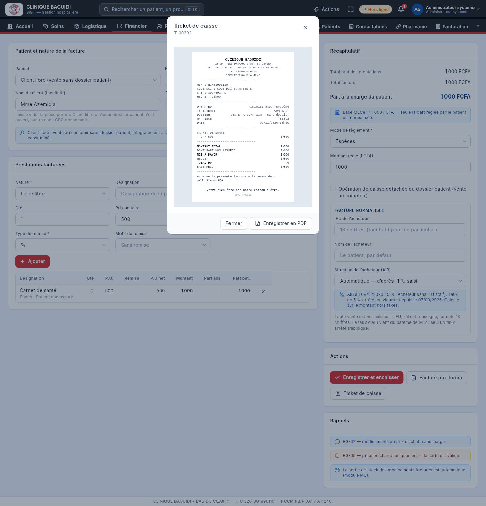

1 Lire ce manuel
À qui s’adresse ce manuel
Ce manuel s’adresse à tous les agents de la Clinique Baguidi qui utilisent le logiciel SIGH-CBG : accueil, médecins, sages-femmes, infirmiers, laboratoire, pharmacie, caisse, comptabilité, ressources humaines et Direction.
Vous n’avez besoin d’aucune connaissance en informatique. Chaque tâche est expliquée pas à pas, avec une image de l’écran.
Ce manuel décrit le poste de travail : le logiciel installé sur les ordinateurs de la clinique. Un chapitre présente aussi l’application mobile. L’administration technique (installation, comptes, synchronisation, relais en ligne) fait l’objet d’un manuel séparé : le Manuel administrateur.
Comment lire ce manuel
Les chapitres suivent l’ordre du menu du logiciel, de gauche à droite : Accueil, Soins, Logistique, Financier, RH, Pilotage. Lisez d’abord le chapitre 2, Prendre en main le poste, et le chapitre 3, Travailler avec les tableaux. Allez ensuite directement au chapitre de votre service.
Chaque tâche est présentée de la même façon :
- le but, en une phrase ;
- le prérequis : le droit ou la situation nécessaire ;
- les étapes, numérotées dans l’ordre ;
- une capture d’écran annotée ;
- si besoin, un encadré qui attire votre attention.
Les conventions d’écriture
| Vous lisez | Cela signifie |
|---|---|
| Nouveau | Le nom exact d’un bouton, d’un champ ou d’un écran, tel qu’il apparaît à l’écran. |
| Accueil ➔ Répertoire des patients | Un chemin : cliquez d’abord sur Accueil, puis sur Répertoire des patients. |
| Ctrl + K | Une combinaison de touches du clavier : maintenez la première touche enfoncée et appuyez sur la seconde. |
| 1 | Une pastille numérotée : elle renvoie à l’étape de même numéro et à la flèche de même numéro sur la capture. |
Les flèches sur les captures
Sur chaque capture, une flèche rouge pointe l’élément sur lequel vous devez agir. Un cadre rouge l’entoure. La pastille numérotée au bout de la flèche correspond au numéro de l’étape.
Les captures viennent du logiciel lui-même, ouvert sur le jeu de démonstration. Les noms de patients et d’agents qui y figurent sont fictifs.
Les encadrés
Un complément utile pour comprendre ce que fait le logiciel.
Un point à vérifier avant d’agir, pour éviter une erreur ou un refus.
Une action irréversible ou un risque de perte de données. Lisez cet encadré avant de continuer.
Un raccourci ou une façon plus rapide de travailler.
Chacun voit ce que son rôle permet
Chaque compte est rattaché à un rôle : Accueil, Médecin, Infirmier / Sage-femme, Biologiste médical, Caisse, Comptabilité, Gestionnaire de stock, Ressources humaines, Direction, etc. La matrice des droits, réglée par l’administrateur, décide pour chaque rôle :
- les écrans que vous voyez dans le menu ;
- ce que vous pouvez modifier sur ces écrans ;
- ce que vous pouvez annuler ou exporter.
Un écran fermé à votre rôle n’apparaît pas dans le menu ni dans la recherche. Un bouton que vous n’avez pas le droit d’utiliser est absent, et non grisé. Il est donc normal que votre écran ne montre pas tous les boutons décrits dans ce manuel.
Si un écran vous manque pour faire votre travail, adressez-vous à l’administrateur : il peut modifier les droits de votre rôle. Le changement s’applique sans réinstaller le poste.
Toutes vos actions sont enregistrées au journal d’audit avec votre nom, la date et l’heure. Aucune action n’est anonyme. Ne prêtez jamais votre compte.
2 Prendre en main le poste
Ouvrir une session
Vous vous identifiez pour accéder au logiciel avec votre propre compte.
un compte ouvert par l’administrateur (identifiant et mot de passe).
- Dans le champ Identifiant, saisissez votre identifiant, sous la forme prenom.nom.
- Dans le champ Mot de passe, saisissez votre mot de passe. Pour vérifier ce que vous tapez, cliquez sur l’œil à droite du champ.
- Cliquez sur Se connecter. Votre tableau de bord s’ouvre.
À votre première connexion, le logiciel vous demande de remplacer le mot de passe provisoire. Saisissez le Nouveau mot de passe, puis Confirmer le mot de passe, et cliquez sur Définir le mot de passe et se connecter.
Après 3 tentatives infructueuses, le compte est verrouillé 15 minutes. Toutes les tentatives, réussies ou refusées, sont enregistrées au journal.
Mot de passe oublié ? Cliquez sur Mot de passe oublié ?, saisissez votre identifiant, puis Envoyer les instructions. La demande est transmise à l’administrateur, qui vous donne un nouveau mot de passe provisoire.
Découvrir l’écran de travail
Après la connexion, le poste affiche votre tableau de bord. Tous les écrans du logiciel ont la même organisation.
- La recherche globale : trouvez un patient, un produit, un employé ou un écran.
- La cloche : vos notifications. Le chiffre rouge compte les alertes en attente.
- Votre profil : votre nom et votre rôle. Cliquez pour ouvrir le menu du profil.
- Le ruban : les grands domaines du logiciel (Accueil, Soins, Logistique, Financier, RH, Administration, Système, Pilotage).
- Le fil d’Ariane : il indique où vous êtes. Cliquez sur un élément pour remonter.
- À regarder en premier : ce qui attend votre attention en arrivant, avec un bouton pour y aller.
Sous ces éléments, le tableau de bord présente vos Accès rapides et les parcours de votre poste : les étapes d’un travail courant, dans l’ordre. Une étape d’un autre service porte le nom de ce service.
En bas de chaque écran, le pied légal rappelle la dénomination de la clinique et ses identifiants (IFU, RCCM).
Naviguer avec le ruban
Vous ouvrez un écran à partir du menu.
- Cliquez sur un domaine du ruban, par exemple Accueil. Le panneau du menu s’ouvre.
- Chaque ligne du panneau correspond à un module. Cliquez sur la pastille de l’écran voulu, par exemple Répertoire des patients.
- Les raccourcis à droite du ruban (Patients, Consultations…) ouvrent directement les écrans les plus utilisés.
- La flèche à l’extrémité droite replie ou déplie le panneau.
À l’ouverture du poste, le panneau du menu est replié. Il se referme aussi après votre choix, pour laisser toute la place à l’écran.
Un clic sur le nom d’un module (à gauche de la ligne) ouvre sa page d’accueil : elle présente chaque écran du module sous forme de carte, avec sa description.
Rechercher avec la recherche globale
Vous trouvez rapidement un patient, un produit, un employé ou un écran, sans passer par le menu.
- Cliquez sur la zone Rechercher un patient, un produit, un employé, un écran… en haut de l’écran, ou appuyez sur Ctrl + K.
- Tapez quelques lettres : un nom, un code dossier, une désignation de produit ou un nom d’écran. Les résultats s’affichent au fur et à mesure.
- Cliquez sur le résultat voulu. L’écran correspondant s’ouvre.
La recherche ne propose que ce que votre rôle peut ouvrir. Un écran fermé à votre profil n’y apparaît jamais.
Utiliser les actions rapides
Le bouton Actions de la barre supérieure ouvre la liste des Actions rapides de votre poste : les gestes que vous faites le plus souvent. Cliquez sur une action pour ouvrir l’écran correspondant. La liste ne contient que des écrans ouverts à votre rôle.
Lire et traiter les notifications
Vous consultez les alertes qui concernent votre poste : stock bas, échéance dépassée, résultat à relire, etc.
- Cliquez sur la cloche, en haut à droite. La fenêtre Notifications s’ouvre.
- Cliquez sur Voir pour ouvrir l’écran où l’alerte se traite.
- Cliquez sur Acquitter pour indiquer que vous avez pris connaissance de l’alerte.
Acquitter une alerte arrête le son et retire l’alerte du badge. L’alerte reste dans la liste tant que sa cause existe : par exemple, tant que le stock n’est pas réapprovisionné.
Les alertes peuvent être accompagnées d’un son. Couper le son ne coupe pas l’alerte : la cloche, le badge et la liste continuent de fonctionner. Réglez vos préférences dans Notifications, depuis le menu du profil.
Votre profil, le verrouillage et la déconnexion
Vous accédez à vos réglages personnels et vous quittez le poste en sécurité.
- Cliquez sur votre nom, en haut à droite. La fenêtre Profil utilisateur s’ouvre.
- Cliquez sur un lien : Paramètres système, Mon compte, Notifications, Assistant, Aide & À propos, Contactez l’éditeur, Journal d’audit. Seuls les liens ouverts à votre rôle s’affichent : sur la capture, le profil Accueil en voit quatre.
- Pour quitter le poste, cliquez sur Se déconnecter.
Quand votre session est ouverte par identifiant et mot de passe, la fenêtre propose aussi Verrouiller l’écran. Utilisez-le chaque fois que vous quittez le poste, même un instant.
Le verrouillage automatique au bout de 15 minutes
Après 15 minutes sans activité, le poste se verrouille tout seul et affiche Session verrouillée. L’administrateur peut régler un autre délai.
- Saisissez votre mot de passe.
- Cliquez sur Déverrouiller. Vous retrouvez l’écran que vous aviez, avec votre saisie en cours.
Le verrouillage suspend la session, il ne la ferme pas : votre travail en cours n’est pas perdu.
Travailler hors ligne et « en attente de la mère »
Les postes de la clinique sont reliés à un ordinateur central, appelé poste mère. Les autres postes s’appellent les postes fileuls. Les données saisies sur un poste fileul partent vers la mère, puis vers les autres postes : c’est la synchronisation.
Une pastille, dans la barre supérieure, indique l’état de la synchronisation :
| La pastille affiche | Cela signifie |
|---|---|
| Synchronisé | Le poste est à jour avec la mère. |
| Synchronisation… | Un échange est en cours. |
| En retard | La dernière synchronisation date un peu. Le poste réessaie seul. |
| Hors ligne | La mère n’est pas joignable (réseau coupé, mère éteinte). Le poste continue de travailler. |
| Poste suspendu | L’administrateur a suspendu ce poste. Prévenez-le. |
La pastille précise aussi, selon le cas, depuis quand dure la situation, le nombre d’opérations en attente d’envoi et le nombre d’opérations à traiter.
Hors ligne, continuez à travailler normalement. Vos saisies sont enregistrées sur le poste et partent d’elles-mêmes vers la mère dès que la liaison revient. Ne ressaisissez rien.
Certaines décisions ne peuvent être prises que par la mère : une validation, une demande de prix, une demande d’importation. Sur un poste fileul, ces décisions sont déposées et restent en attente de la mère. Une seconde pastille de la barre supérieure compte ces décisions en attente et indique l’âge de la plus ancienne. Elle disparaît quand il n’y a plus rien en attente.
Une décision en attente n’est pas encore appliquée. Si la pastille passe au rouge, le délai d’alerte est dépassé : le validateur concerné et l’administrateur reçoivent une notification. Rien n’est bloqué sur votre poste.
Un compteur à traiter signale une opération que la mère a refusée. La cause est nommée et le geste de correction est indiqué. Prévenez votre responsable ou l’administrateur.
3 Travailler avec les tableaux
La plupart des écrans présentent leurs données dans un tableau. Tous les tableaux fonctionnent de la même façon.
Rechercher, filtrer et trier
- Tapez quelques lettres dans la zone Rechercher… au-dessus du tableau. Seules les lignes qui contiennent ce texte restent affichées.
- Choisissez une valeur dans une liste de filtre (par exemple Sexe, Couverture ou Quartier sur le répertoire des patients).
- Cliquez sur le titre d’une colonne pour trier le tableau. Cliquez une seconde fois pour inverser l’ordre.
- Cliquez sur Colonnes pour afficher ou masquer des colonnes.
Certains écrans proposent aussi un filtre de période : saisissez les dates Du et Au, ou cliquez sur Aujourd’hui, Sept derniers jours ou Toute la période.
Chaque ligne porte ses actions à droite : par exemple Consulter, Modifier ou Imprimer l’état.
Cocher des lignes
Vous sélectionnez plusieurs lignes pour les exporter ou les imprimer ensemble.
le droit d’exporter. Sans ce droit, le tableau n’affiche pas de cases à cocher.
- Cochez la case au début de chaque ligne voulue. Une barre bleue apparaît et indique le nombre de lignes sélectionnées.
- Pour cocher toutes les lignes de la page, cochez la case de l’en-tête. Pour cocher toutes les lignes du filtre, sur toutes les pages, cliquez sur Tout cocher.
- Pour repartir de zéro, cliquez sur Tout désélectionner.
La sélection est conservée quand vous changez de page. La barre indique aussi les lignes cochées qui sont masquées par le filtre en cours.
Exporter vers Excel ou CSV
Vous enregistrez le contenu d’un tableau dans un fichier que vous pouvez ouvrir avec un tableur.
le droit d’exporter (geste réservé, réglé par l’administrateur).
- Cliquez sur Exporter la sélection (lignes cochées) ou sur Exporter (tout le tableau). La fenêtre Exporter les données s’ouvre.
- Choisissez ce qu’il faut exporter : La sélection, ou tout le tableau, avec ou sans le filtre en cours. Le nombre de lignes est indiqué à droite.
- Cliquez sur Excel (.xlsx) ou sur CSV. Choisissez ensuite l’emplacement du fichier.
Le fichier reprend les colonnes affichées du tableau, avec les valeurs telles que l’écran les montre. Masquez d’abord les colonnes inutiles avec Colonnes. Chaque export est enregistré au journal.
Un fichier exporté sort du logiciel : il n’est plus protégé par les droits. Ne le copiez pas sur une clé ou un téléphone personnel s’il contient des données de patients.
Imprimer la sélection
Cliquez sur Imprimer la sélection dans la barre bleue. Le logiciel prépare un document à l’en-tête officiel de la clinique, avec les lignes cochées. Quand une ligne a sa propre pièce (un bon, une fiche, un reçu), il propose d’imprimer une pièce par ligne.
Tous les documents imprimés portent automatiquement l’en-tête de la clinique (logo, dénomination, coordonnées, IFU, RCCM) et un pied de page avec la date, l’utilisateur et une référence unique.
4 Accueil
Le domaine Accueil regroupe le travail de réception : rendez-vous et visites, files d’attente, patients et constantes, courriers, tarifs publics. Le tableau de bord de l’accueil rappelle les parcours courants : Nouveau patient, Rendez-vous de consultation, Rendez-vous de contrôle.
Ouvrir un dossier patient
Vous créez le dossier d’un patient qui vient pour la première fois à la clinique.
le droit de modifier le répertoire des patients (Accueil).
Accueil ➔ Répertoire des patients ➔ Nouveau
- Vérifiez d’abord que le patient n’a pas déjà un dossier : tapez son nom dans Rechercher un patient….
- S’il n’existe pas, cliquez sur Nouveau. La page Ouvrir un dossier patient s’ouvre.
- Remplissez l’IDENTIFICATION : Nom, Prénom(s), Sexe et Date de naissance. Si la date est inconnue, choisissez de saisir l’âge déclaré.
- Remplissez les COORDONNÉES : Téléphone, Quartier, Adresse, Personne à prévenir.
- Renseignez les ÉLÉMENTS MÉDICAUX connus : Allergies connues, Traitement en cours.
- Si le patient est assuré, remplissez la COUVERTURE ASSURANCE : Compagnie d’assurance, Numéro de police, Taux de prise en charge (%), Expiration de la carte.
- Enregistrez en bas de la page.
Le Code dossier est attribué automatiquement au format CBG/[n° d’ordre]/[année]. Il ne se modifie plus après la création. Deux guichets qui saisissent en même temps n’obtiennent jamais le même numéro.
Une allergie déclarée bloque la délivrance du produit correspondant à la pharmacie. Laissez le champ vide si aucune allergie n’est connue : n’écrivez pas « néant ».
Au-delà de la date d’Expiration de la carte, l’assurance ne s’applique plus : la facture est intégralement à la charge du patient. Vérifiez la carte à chaque venue.
La colonne de droite, Enchaînement du parcours, rappelle la suite : constantes, file d’attente, dossier et fiche de consultation, caisse.
Consulter la fiche d’un patient
Vous retrouvez toutes les informations d’un patient sur un seul écran.
Soins ➔ Patients & Dossier médical ➔ Fiche patient
- Choisissez le patient dans Sélectionner un dossier patient. Depuis le répertoire, l’action Consulter d’une ligne mène au même résultat.
- Lisez le bloc Identité et couverture. Les allergies déclarées apparaissent dans un bandeau orange.
- Cliquez sur une rubrique à droite : Administratif, Médical, Antécédents & allergies, Hospitalisations, Maternité, Analyses & résultats, Imagerie médicale…
- Utilisez les boutons du haut : Modifier le dossier, Fiche de consultation, Documents numérisés, Imprimer la fiche.
Certaines informations sont réservées : un champ peut afficher « Information réservée — droit requis ». Votre rôle ne vous donne pas accès à cette donnée.
Relever les constantes à l’accueil
Vous enregistrez la température, la tension, le poids et le pouls du patient avant la consultation.
Accueil ➔ Constantes à l’accueil ➔ Nouveau relevé
- Cliquez sur Nouveau relevé.
- Choisissez le patient, puis saisissez les valeurs mesurées.
- Enregistrez. Les constantes seront reprises automatiquement dans le dossier de consultation.
Prendre un rendez-vous ou enregistrer une visite
Vous planifiez la venue d’un patient, ou vous enregistrez une personne qui se présente sans rendez-vous.
Accueil ➔ Rendez-vous & visites
- Pour un rendez-vous, cliquez sur Nouveau. Pour une personne qui se présente, cliquez sur Passage sans rendez-vous.
- Remplissez la fenêtre : le patient (ou la personne non enregistrée), le Praticien, le Type, la Date et heure et le Motif.
- Cliquez sur Créer.
Les onglets séparent l’Agenda — à venir, reportés, non honorés, les rendez-vous Honorés (apurés de l’agenda) et les Archivés. Les indicateurs du haut comptent les rendez-vous à venir, reportés et non honorés : ces derniers sont les patients à rappeler.
Une personne non enregistrée (visiteur, affaire privée) se note par son nom, son prénom, son quartier et son téléphone. Aucun dossier médical n’est ouvert pour elle.
Gérer la file d’attente
Vous inscrivez un patient dans la file d’un poste (consultation, caisse, prélèvement, pharmacie…) puis vous l’appelez.
Accueil ➔ File d’attente
- Cliquez sur Inscrire un patient.
- Choisissez le Patient, la Priorité de triage et le Motif, puis cliquez sur Inscrire.
- Quand le poste est prêt, cliquez sur Appeler sur la ligne du patient. Son numéro d’appel s’affiche sur l’Écran d’appel des patients.
L’ordre d’arrivée décide du rang, sauf urgence : la priorité fait passer une urgence en tête. Pour la changer, utilisez Modifier la priorité.
Recevoir un patient externe
Vous enregistrez la demande d’un patient adressé par un autre établissement (analyses, imagerie, maternité, hospitalisation).
Accueil ➔ Patient externe ➔ Nouvelle demande externe
- Cliquez sur Nouvelle demande externe.
- Choisissez la nature de la demande, puis cochez les examens au catalogue. Indiquez l’établissement et le prescripteur.
- Enregistrez. La demande part à la caisse : rien n’est exécuté avant le paiement.
L’accueil transcrit l’ordonnance extérieure : il coche les examens au catalogue et ne saisit jamais de montant libre. Les résultats sont saisis au laboratoire, pas à l’accueil.
Délivrer un certificat ou une attestation
Vous établissez une pièce certifiante (certificat médical, attestation) pour un patient de la clinique ou un patient externe.
Soins ➔ Patients & Dossier médical ➔ Certificats & attestations
- Cliquez sur Délivrer une pièce.
- Choisissez le type de pièce et le patient, puis complétez les champs demandés.
- Enregistrez, puis imprimez la pièce.
Un certificat est une prestation tarifée : il passe par la caisse. Son état de règlement se lit sur la facture (réglé, à encaisser ou en attente). Les tarifs se consultent dans Accueil ➔ Certificats médicaux.
5 Soins
Le domaine Soins couvre le travail clinique : dossier et fiche de consultation, ordonnances, imagerie médicale, hospitalisation et bloc, maternité, laboratoire. L’ordre est toujours le même : dossier ➔ fiche ➔ prescription ➔ caisse.
Ouvrir le dossier de consultation
Vous recueillez l’anamnèse, les antécédents et l’examen physique du patient avant de rédiger la fiche.
un rôle soignant (médecin, sage-femme…) avec le droit de modifier les consultations.
Soins ➔ Dossiers de consultation ➔ Nouveau dossier
- Cliquez sur Nouveau dossier et choisissez le patient.
- Remplissez l’anamnèse, les antécédents (médicaux, chirurgicaux, gynéco-obstétricaux) et l’état général. Les constantes de l’accueil sont reprises et affichées : vous ne les ressaisissez pas.
- Remplissez l’examen physique, appareil par appareil. Le bouton Normal par défaut remplit les champs restés vides.
- Enregistrez.
Un patient n’a qu’un dossier de consultation ouvert à la fois. Si vous essayez d’en ouvrir un second, le logiciel vous indique le dossier déjà ouvert.
Rédiger la fiche de consultation et prescrire
Vous concluez la consultation et vous prescrivez médicaments, analyses et imagerie en une seule fois.
un dossier de consultation enregistré pour ce patient.
Soins ➔ Fiche de consultation
- Choisissez le Dossier patient, le Praticien, et vérifiez la Date et heure.
- Remplissez la SYNTHÈSE ET DIAGNOSTIC : choisissez la ou les Pathologie(s) retenue(s) et rédigez le Diagnostic retenu.
- Dans Médicaments prescrits, choisissez chaque médicament, sa quantité, sa posologie et sa durée, puis cliquez sur Ajouter un médicament.
- Cochez les Analyses de laboratoire prescrites et l’Imagerie médicale prescrite.
- Vérifiez le total, choisissez l’orientation du patient, puis enregistrez.
La fiche refuse un patient sans dossier de consultation enregistré. Cliquez alors sur Ouvrir les dossiers de consultation.
La pathologie sert aux statistiques de morbidité ; le diagnostic est la phrase clinique. Les deux sont nécessaires. La fiche est la seule porte de prescription : elle produit en un geste l’ordonnance, les demandes d’analyses et d’imagerie, et une facture globale pour la caisse.
Les demandes d’analyses et d’imagerie restent bloquées jusqu’au règlement à la caisse. Le patient passe donc à la caisse avant le prélèvement ou l’examen.
Retrouver et imprimer une ordonnance
L’écran Soins ➔ Ordonnances présente toutes les ordonnances. Utilisez la recherche pour retrouver celle d’un patient, puis imprimez-la depuis l’action de la ligne. Le bouton Nouvelle ordonnance sert aux prescriptions directes ; le bouton File d’attente caisse montre les ordonnances qui attendent le règlement.
Réaliser un examen d’imagerie
Vous rédigez le compte rendu d’un examen d’imagerie (échographie, radiographie, mammographie, scanner, IRM) et le rendez au prescripteur.
le droit d’écrire sur les demandes d’imagerie (poste d’imagerie).
Soins ➔ Imagerie médicale ➔ Demandes d’imagerie médicale
- Repérez la demande payée, puis cliquez sur Saisir le CR.
- Complétez l’en-tête (examen, patient, réalisateur, provenance), puis rédigez les rubriques du compte rendu. Enregistrez. Un compte rendu commencé se reprend avec Poursuivre le CR.
- Quand le compte rendu est terminé, cliquez sur Rendre : le prescripteur le reçoit.
Une demande suit quatre états : demandée, payée, exécutée, validée. Les clichés se rattachent au patient dans la Galerie des clichés. Chaque modalité a son tableau : Tableau Échographie, Tableau Radiographie, Tableau Mammographie, Tableau Scanner, Tableau IRM.
Un examen non payé ne s’exécute pas. Un examen sans tarif est refusé à la demande, avec le nom de l’examen : prévenez la personne chargée des tarifs.
Admettre un patient en hospitalisation
Vous enregistrez l’entrée d’un patient dans un lit.
Soins ➔ Hospitalisation ➔ Admissions ➔ Nouveau
- Cliquez sur Nouveau.
- Renseignez le Dossier patient, le Lit, l’Infirmier référent, la Date d’entrée, le Type de prise en charge, le Diagnostic d’entrée et les Symptômes constatés.
- Enregistrez. Le lit apparaît occupé sur le Plan des lits.
Un lit ne porte qu’une admission active. Pour une surveillance courte (24 heures de référence), utilisez plutôt Mise en observation.
Pendant le séjour, l’équipe utilise la Feuille de température, la Feuille de soins, l’Administration des traitements et la Fiche de surveillance.
La sortie (Sorties d’hospitalisation) exige le solde apuré à la caisse, la signature du patient, celle de l’infirmier et le constat du gardien. Une sortie contre avis médical se note dans Sortie contre avis médical, avec son motif.
Bloc opératoire et anesthésie
Le bloc dispose de ses propres écrans dans Soins ➔ Hospitalisation :
- Consultation pré-anesthésique : avant l’intervention.
- Check-listes du bloc : avant et après l’intervention.
- Comptes rendus opératoires : cliquez sur Nouveau compte rendu ; le compte rendu nomme l’opérateur, l’aide-opérateur et l’anesthésiste.
- Comptes rendus d’anesthésie : induction, entretien et réveil.
Une check-liste incomplète est signalée, jamais refusée. Une intervention sans consultation pré-anesthésique est signalée, jamais bloquée : l’urgence n’attend pas.
Maternité
Le module Maternité, Naissances & Décès suit la grossesse de la première consultation prénatale jusqu’après l’accouchement. Le Dossier obstétrical rassemble les autres écrans en un seul cahier.
- Ouvrez Soins ➔ Dossier obstétrical et cliquez sur Nouveau à la première consultation prénatale.
- Saisissez la date des dernières règles : la date probable d’accouchement est calculée.
- Enregistrez chaque visite dans CPN & carte maternelle, le travail dans Partogramme, puis l’accouchement dans Accouchements et le nouveau-né dans Dossier bébé & soins du nouveau-né.
Le niveau de risque de la grossesse n’est pas un champ à remplir : il se déduit des facteurs cochés. Les consultations après l’accouchement se saisissent dans Consultations post-natales (CPoN), les naissances et décès dans leurs registres.
Laboratoire : du prélèvement au résultat
Le circuit d’une analyse suit toujours le même ordre :
- le médecin prescrit l’analyse sur la fiche de consultation ;
- le patient règle à la caisse : la demande est débloquée ;
- la Salle de prélèvement prélève, puis transmet l’échantillon au laboratoire ;
- le laboratoire reçoit l’échantillon, saisit le résultat et le valide ;
- le résultat est imprimé et transmis au prescripteur, ou remis au patient s’il est externe.
Prélever et transmettre
Soins ➔ Laboratoire ➔ Salle de prélèvement
Les onglets séparent les demandes à prélever, à transmettre et reçues. Prélevez, puis enregistrez le geste : le patient peut partir. Transmettez ensuite l’échantillon au laboratoire avec son bon.
Saisir et valider un résultat
Soins ➔ Laboratoire ➔ Saisie des résultats
- Retrouvez la demande. Vérifiez le code d’analyse et la référence affichés : comparez-les au bon papier.
- Saisissez les valeurs de chaque variable. Les valeurs hors des bornes de référence sont signalées.
- Enregistrez : c’est la validation technique. La validation biologique rend ensuite le résultat visible au prescripteur.
Le laboratoire ne saisit pas un résultat avant d’avoir reçu l’échantillon. La ligne reste visible, mais le bouton de saisie est verrouillé et indique à quel poste se trouve la demande.
Un résultat validé biologiquement ne s’écrase jamais. Une correction devient une rectification : l’ancienne version est conservée, le motif est obligatoire, et le prescripteur est prévenu que ce qu’il a lu a changé.
L’Impression des résultats ne sort le compte rendu que pour un examen réglé. Le Comparatif des résultats montre les résultats antérieurs du patient, côte à côte.
6 Pharmacie et stock
Le module Pharmacie & Stocks se trouve dans le domaine Logistique. Deux règles le gouvernent : le stock ne devient jamais négatif, et toute sortie a un justificatif.
Délivrer une ordonnance, ligne par ligne
Vous remettez au patient les médicaments d’une ordonnance réglée à la caisse.
une ordonnance encaissée ; le droit de modifier la dispensation.
Logistique ➔ Dispensation
- Dans Ordonnances à délivrer, repérez l’ordonnance du patient et cliquez sur l’icône Délivrer de sa ligne.
- La fenêtre Délivrer présente les Lignes à servir. Vérifiez chaque produit, sa quantité et son lot.
- Cliquez sur Confirmer la délivrance. Si le stock ne couvre pas toutes les lignes, cliquez sur Délivrer les lignes couvertes : les autres lignes restent à servir.
Aucune délivrance ne se crée à la main : toute délivrance naît d’une ordonnance du médecin, passée en caisse. Le numéro d’ordonnance est le justificatif de la sortie. Une ligne marquée Bloquée jusqu’à l’encaissement attend le paiement.
Le logiciel propose les lots dans l’ordre FEFO : le lot qui se périme le premier sort le premier. Suivez cet ordre en rayon.
Le tableau Historique des dispensations, sous la file, garde chaque délivrance. Le bouton Imprimer d’une ligne édite le bon de sortie.
Consulter les stocks
Le stock existe à deux niveaux :
- Stock gros (magasin) : le magasin central, approvisionné par les livraisons des fournisseurs ;
- Stock détail (pharmacie) : la pharmacie, approvisionnée par les transferts depuis le magasin.
Chaque écran affiche les quantités, la valeur et les alertes. Le bouton Éditer l’état imprime l’état du stock. L’écran Alertes & seuils liste les articles sous leur seuil d’alerte.
Suivre les lots et les péremptions (FEFO)
Logistique ➔ Lots & péremptions (FEFO)
Chaque lot porte son numéro et sa date de péremption. Les lots proches de la péremption sont signalés automatiquement. Le bouton État des produits périmés imprime la liste des produits périmés. Une casse ou une péremption se déclare dans Pertes, casses & rebuts : elle est enregistrée comme un mouvement de stock.
Faire un inventaire
Vous comptez le stock physique d’un magasin et vous régularisez les écarts avec le stock théorique.
le droit de modifier les inventaires.
Logistique ➔ Inventaires ➔ Lancer un inventaire
- Cliquez sur Lancer un inventaire. Choisissez le magasin (stock gros ou stock détail) et le périmètre.
- La Feuille d’inventaire s’ouvre. La colonne PHYSIQUE est pré-remplie avec le stock théorique. Pour chaque article compté, remplacez-la par la quantité réellement comptée. Filtrez par désignation ou code pour aller plus vite.
- Pour un article que vous n’avez pas pu compter, cochez la case NON COMPTÉ. Son stock ne sera pas modifié.
- Vérifiez les colonnes ÉCART et VALEUR, calculées en direct.
- Cliquez sur Valider l’inventaire.
Un article non compté n’est pas un article à zéro, ni un article conforme. Si vous ne cochez pas NON COMPTÉ, la quantité pré-remplie est prise pour le comptage réel. Saisissez 0 uniquement si le rayon est réellement vide. Le bilan de la validation indique le nombre d’articles non comptés, laissés tels quels.
La validation écrit un mouvement de régularisation par écart, sur le magasin compté. Relisez la feuille avant de cliquer sur Valider l’inventaire.
Transférer du magasin vers la pharmacie
Vous approvisionnez la pharmacie depuis le magasin central, en un seul bon pour plusieurs articles.
Logistique ➔ Transferts gros → détail ➔ Nouveau transfert
- Cliquez sur Nouveau transfert.
- Ajoutez chaque article et sa quantité. Le logiciel contrôle le disponible ligne par ligne, en tenant compte de ce qui est déjà sur le bon.
- Enregistrez, puis imprimez le bon de transfert à signer.
Un bon de transfert enregistré a déjà déplacé le stock : il ne se modifie pas. Pour le corriger, archivez-le, puis émettez un nouveau bon.
7 Achats
Le module Achats & Fournisseurs (domaine Logistique) suit le circuit complet : besoin ➔ commande ➔ livraison ➔ facture fournisseur.
Exprimer un besoin
Vous demandez du matériel, des consommables ou des fournitures pour votre service.
aucun : tout agent peut exprimer un besoin.
Logistique ➔ Bons d’expression de besoins ➔ Nouveau bon
- Cliquez sur Nouveau bon.
- Renseignez la Date, le Service demandeur, le Demandeur et la Catégorie du besoin, puis ajoutez chaque article avec sa quantité voulue (bouton Ajouter).
- Cliquez sur Créer le bon. Le bon part soumis à l’arbitrage.
L’écran présente plusieurs vues : Mes demandes, les bons En attente d’arbitrage DAF, les Besoins validés — achats & logistique et Tous les bons. Vous ne voyez que les vues permises par votre rôle.
La Directrice administrative (DAF) arbitre chaque bon : elle le valide, le rejette ou demande un complément. Un rejet ou une demande de complément porte toujours son motif. La quantité accordée peut être différente de la quantité demandée.
Établir un bon de commande
Logistique ➔ Bons de commande ➔ Nouvelle commande
- Cliquez sur Nouvelle commande.
- Choisissez le fournisseur et ajoutez les articles, les quantités et les prix.
- Enregistrez. La commande est transmise au fournisseur seulement après la validation de la Directrice administrative.
Réceptionner une livraison
Logistique ➔ Bons de livraison ➔ Nouveau
À l’arrivée du fournisseur, cliquez sur Nouveau, rattachez la livraison à sa commande, puis saisissez les quantités réellement livrées et les lots. Les écarts entre commandé et livré apparaissent dans Écarts de livraison. Les procès-verbaux se rédigent dans PV de réception — consommables et PV de réception — réactifs.
Un PV de réception dont la conclusion n’est pas « Conforme » exige des réserves écrites.
Enregistrer une facture fournisseur
Logistique ➔ Factures fournisseurs
L’écran liste les factures reçues des fournisseurs, leur échéance et leur état de paiement. Les factures impayées forment la dette fournisseurs, suivie par la comptabilité.
8 Caisse et facturation
Le module Facturation & Caisse se trouve dans le domaine Financier. La caisse encaisse les factures produites par les prescriptions ; elle ne crée jamais une demande d’examen.
Encaisser une prescription, ligne par ligne
Vous encaissez le règlement d’un patient, en cochant les prestations qu’il paie.
le droit de modifier la caisse.
Financier ➔ État de caisse journalier
- Dans Prescriptions à encaisser, cliquez sur l’icône Encaisser de la ligne du patient.
- Dans la fenêtre, cochez les prestations que le patient règle. Pour tout prendre, cliquez sur Tout cocher.
- Vérifiez le MONTANT À ENCAISSER, puis choisissez le Mode de règlement (espèces, terminal de paiement, MTN Mobile Money, Moov Money…). Saisissez la Référence de transaction si besoin.
- La facture d’un patient est normalisée MECeF sans acheteur ni AIB : il n’y a ni IFU ni nom d’acheteur à saisir, le patient paie le total.
- Cliquez sur Valider l’encaissement, puis imprimez le reçu.
Seules les prestations réglées passent au laboratoire, à l’imagerie et à la pharmacie. Une prestation non payée reste en attente, nommément : le patient peut revenir l’acquitter plus tard. Pour reprendre un règlement, utilisez Encaisser le reste dans le registre des pièces du jour.
Une ligne au prix à valoriser ne s’encaisse pas : son prix d’achat n’est pas encore fixé. Les autres prestations s’encaissent normalement, et la personne qui fixe les prix est prévenue. Ne remplacez jamais ce prix par un montant de votre choix.
La prise en charge de l’assurance ne s’applique que si la carte est valide à la date de la facture. Sinon, la facture est entièrement à la charge du patient. La fenêtre affiche la Part assureur et la part À PAYER par le patient.
Établir une nouvelle facture
Vous facturez une prestation qui ne vient pas d’une prescription : vente au comptoir, acte ponctuel.
Financier ➔ Nouvelle facture
- Choisissez le Patient et la Nature de la facture. Pour une vente sans dossier, cochez Opération de caisse détachée du dossier patient (vente au comptoir).
- Dans Prestations facturées, choisissez chaque prestation, la quantité et la remise éventuelle avec son motif, puis cliquez sur Ajouter.
- Vérifiez le Récapitulatif, choisissez le Mode de règlement et le Montant réglé (FCFA), puis enregistrez.
Pour un assuré, les lignes couvertes et les lignes non couvertes font deux factures distinctes. Les médicaments sont facturés au prix d’achat, sans marge : ils ne portent pas de remise.
Encaisser une facture due
Financier ➔ Paiements
L’onglet À encaisser liste les factures impayées ou partiellement réglées. Cliquez sur Encaisser sur la ligne, saisissez le Montant encaissé (FCFA), le Mode de règlement et la référence, puis cliquez sur Valider l’encaissement. L’onglet Historique des règlements garde chaque règlement et son reçu.
Un règlement validé ne se retouche pas. Une erreur se corrige par une facture d’avoir, jamais en modifiant le règlement.
Imprimer le reçu et le ticket 80 mm
Après l’encaissement, cliquez sur Imprimer le reçu. Le reçu détaille chaque prestation payée, la part de l’assureur, la part du patient et le reste dû. Sur l’imprimante de caisse, le reçu sort au format ticket 80 mm.
Pour réimprimer un reçu plus tard, ouvrez le registre des pièces du jour de l’État de caisse journalier et cliquez sur Réimprimer le reçu détaillé.

Émettre une facture d’avoir
Vous annulez tout ou partie d’une facture déjà émise : erreur, soins interrompus, évacuation après paiement.
le droit d’annuler en facturation (il n’est pas donné au caissier).
Financier ➔ Factures d’avoir ➔ Émettre un avoir
- Cliquez sur Émettre un avoir.
- Choisissez la facture d’origine, puis les lignes annulées et le motif.
- Enregistrez. La facture d’origine porte désormais son avoir ; elle n’est jamais réécrite.
Un avoir est une pièce comptable et fiscale définitive. Le total des avoirs ne peut pas dépasser la facture d’origine. Vérifiez les lignes avant d’enregistrer.
Faire l’arrêté de caisse
En fin de journée, ouvrez Financier ➔ État de caisse journalier. Choisissez la Journée de caisse, vérifiez les indicateurs (Factures émises, Chiffre d’affaires, Total encaissé, Reliquats du jour) puis cliquez sur Éditer l’arrêté de caisse. Comptez la caisse physique et comparez-la au total par mode de règlement.
La facture normalisée MECeF
Toute vente est normalisée : la facture doit être certifiée par un dispositif fiscal MECeF. La clinique utilise un boîtier physique ELTRADE CC300.
- Factures normalisées : le registre fiscal de toutes les factures, avec leur STATUT FISCAL (par exemple En attente de transmission).
- Transmission & réponses : les échanges avec le dispositif.
- Avoirs & annulations et Journal des transactions.
- Configuration fiscale : le mode de certification et les mentions légales (réservée aux profils habilités).
Dans cette version, l’adaptateur du boîtier ELTRADE CC300 n’est pas encore branché au logiciel : une vente reste en attente de certification. Le logiciel ne fabrique jamais de numéro fiscal. Les factures se certifieront dès que l’adaptateur fourni par l’éditeur du boîtier sera installé.
Seule la part réglée par le patient entre dans la base MECeF : ni la part de l’assureur ni les remises. L’IFU de l’acheteur, s’il est saisi, compte 13 chiffres ; il est facultatif pour un particulier.
9 Assurances
Le module Assurances & Créances (domaine Financier) gère les compagnies partenaires, les cartes des assurés et les créances sur les compagnies.
Vérifier la carte d’un assuré
Vous contrôlez qu’une carte d’assurance est valide avant de facturer.
Financier ➔ Assurés & cartes
- Retrouvez l’assuré avec la recherche.
- Cliquez sur Vérifier la carte sur sa ligne. Le logiciel indique si la carte est valide à la date du jour.
Une carte non valide à la date de la facture entraîne une facturation intégrale au patient. Le dossier patient affiche « CARTE NON VALIDE » en rouge.
Prises en charge et factures aux assureurs
- Prises en charge : les accords de prise en charge, par patient et par prestation.
- Factures mensuelles assureur : chaque mois, cliquez sur Éditer le relevé (détail patient par patient) et sur Éditer la facture mensuelle (récapitulatif par souscripteur). Les deux doivent se recouper avant l’envoi.
- Facture mère assurance : une pièce unique par compagnie, qui regroupe les factures mensuelles de ses souscripteurs.
- Créances et Relances : ce que chaque compagnie doit encore, par ancienneté.
10 Ressources humaines et paie
Le domaine RH regroupe deux modules : Ressources humaines et Paie & Primes. Leurs écrans sont réservés aux profils RH, à la Direction et à la comptabilité, sauf Mon espace.
Mon espace
RH ➔ Mon espace
Chaque agent y lit ses propres informations : poste, paie, contrat, planning, présences, congés, missions, primes, événements, assurance, notes de service, agenda. C’est la page RH ouverte à tous les agents connectés sous leur propre compte. Rien ne s’y saisit : chaque demande se fait sur son écran.
Gérer le personnel
RH ➔ Personnel ➔ Nouveau
Cliquez sur Nouveau pour enregistrer un agent : identité, fonction, service, contrat. L’action Consulter d’une ligne ouvre la Fiche employé. Un agent qui quitte la clinique est archivé, jamais supprimé.
Planning, gardes et congés
- Planning & gardes : les gardes de 24 heures (08 h ➔ 08 h), les permanences (08 h – 18 h) et les repos. Les incompatibilités sont bloquées.
- Présences & absences : le registre des présences.
- Congés : cliquez sur Nouveau pour saisir une demande. Le bouton Régler de la carte Réglages du planning et des présences est réservé à l’administrateur et à la Directrice administrative.
- Évaluations (NS 131), Sanctions et Primes (NS 132) : selon les notes de service de la clinique.
Calculer la paie et éditer les bulletins
Vous calculez les salaires du mois et vous produisez les bulletins de paie.
un profil de paie (comptabilité ou RH).
RH ➔ Calcul de la paie
- Vérifiez que le planning, les présences, les primes et les avances du mois sont à jour.
- Cliquez sur Lancer le calcul. Contrôlez le tableau : brut, retenues, net à payer.
- Cliquez sur Générer les bulletins. Imprimez le journal avec Éditer le journal de paie.
- La Direction valide la paie dans Validation Direction.
Les bulletins se consultent et s’impriment dans Bulletins de paie. Les cotisations se suivent dans Cotisations CNSS / ITS / VPS et la redevance dans Redevance ORTB.
Les primes de garde et de permanence sont calculées à partir du planning validé et de la grille en vigueur à la date de la garde. Changer la grille ne modifie pas une paie déjà calculée.
11 Comptabilité
Le module Comptabilité SYSCOHADA (domaine Financier) tient les écritures, les journaux, le grand livre, la balance et les états financiers. Beaucoup d’écritures naissent toutes seules : un encaissement, une dépense ou une paie produit son écriture en brouillon.
Saisir et valider une écriture
Vous enregistrez une écriture comptable équilibrée.
un profil comptable.
Financier ➔ Écritures comptables ➔ Nouvelle écriture
- Cliquez sur Nouvelle écriture.
- Renseignez la Date de l’opération, le Journal et le Libellé de l’opération, puis saisissez chaque ligne : compte, débit ou crédit.
- Vérifiez que le total des débits est égal au total des crédits, puis enregistrez. L’écriture est en brouillon.
- Validez l’écriture quand elle est contrôlée.
Une écriture déséquilibrée (débit différent du crédit) est refusée. Seules les écritures validées comptent dans le compte de résultat et les états financiers.
Journaux, grand livre et balance
- Journaux comptables : les écritures par journal et par exercice.
- Grand livre : les mouvements d’un compte, avec le solde d’ouverture et le solde de clôture. Cliquez sur Imprimer le grand livre pour l’éditer.
- Balance générale & âgée : les soldes de tous les comptes.
- Dépenses journalières : une dépense peut porter plusieurs lignes ; elle produit son écriture.
Un solde que le logiciel ne peut pas connaître s’affiche « Inconnu », jamais zéro.
Clôturer un exercice
Financier ➔ Exercices & clôtures
- Validez toutes les écritures de l’exercice.
- Cliquez sur Pré-clôture et lisez les contrôles proposés.
- Clôturez quand tous les contrôles sont satisfaits. Le Bilan d’ouverture & à-nouveaux reporte les soldes sur l’exercice suivant.
La clôture d’un exercice est définitive : plus aucune écriture ne peut y être passée. Elle est réservée aux profils habilités. Assurez-vous d’abord qu’une sauvegarde récente existe.
États financiers
Les écrans Compte de résultat, Tableau des flux de trésorerie et États financiers présentent les états au format de la liasse fiscale, avec les mêmes références de lignes. Deux colonnes ne se mélangent jamais : la colonne déposée cite la liasse remise à l’administration ; la colonne calculée vient des écritures validées.
Les obligations fiscales se suivent dans Échéances fiscales & paiements, et la retenue sur les ventes dans Acompte sur impôt (AIB).
12 Pilotage et tableaux de bord
Le domaine Pilotage regroupe les Tableaux de bord par poste, les statistiques et les tableaux de la Direction. Chaque rôle arrive sur son propre tableau de bord après la connexion.
Lire votre tableau de bord
Un tableau de bord se lit de haut en bas :
- À regarder en premier : la question du moment, son compte et le bouton qui y mène ;
- Accès rapides : vos écrans les plus utiles ;
- les indicateurs (cartes chiffrées) et les tableaux ;
- les parcours de votre poste, étape par étape.
Une étape d’un parcours dont l’écran est fermé à votre rôle reste visible mais n’est pas cliquable : elle porte la mention « fermé à votre profil ». Une étape d’un autre poste porte le nom de ce poste.
Le tableau de la Direction
Pilotage ➔ Direction
La Direction suit l’activité, les recettes, les créances et les échéances. Le bouton Éditer le rapport de direction imprime le rapport ; Voir les échéances ouvre le suivi fiscal. Les écrans Statistiques de la Direction, Tableau de bord dynamique croisé et Tableau de bord décisionnel complètent l’analyse.
Tous les indicateurs sont calculés à partir des registres du logiciel, jamais saisis. Une période se choisit et se nomme : un mois calendaire, un trimestre, une année. « Non calculable » n’est pas « zéro » : il manque une donnée.
13 L’Assistant
Vous posez une question en français sur les données que votre profil peut lire.
aucun : tout agent connecté peut utiliser l’Assistant.
Votre nom (profil) ➔ Assistant
- Ouvrez le menu du profil et cliquez sur Assistant.
- Tapez votre question dans la zone Votre question, ou cliquez sur un des exemples proposés.
- Cliquez sur Demander. La réponse s’affiche avec sa Source : l’écran d’où vient l’information. Un bouton permet d’ouvrir cet écran.
Exemples de questions : « Combien doit encore le patient CBG/12/26 ? », « Qui est hospitalisé en ce moment ? », « Quel est le prix de la consultation généraliste ? », « Qui est de garde ce soir ? ».
L’Assistant ne modifie jamais rien et ne donne pas d’avis médical. Il ne répond qu’avec les données que votre rôle peut lire. Quand il ne sait pas, il le dit : « non calculable », « pas de données » ou « vous n’avez pas le droit ».
La conversation reste sur votre poste. Le bouton Effacer la conversation la supprime ; aucune donnée de la clinique n’est touchée.
14 L’application mobile
L’application mobile SIGH-CBG est volontairement simple. Elle sert aux soignants en tournée (visites à domicile, consultations hors du poste) et à la réception de secours. Elle échange avec la clinique par le relais en ligne, de façon chiffrée.
Ce que fait l’application
- Ma tournée : l’Agenda du jour et les Dossiers du lot confiés au téléphone pour la journée.
- Le Dossier du patient : identité, couverture, allergies, dernières constantes.
- La saisie : Saisir les constantes, notes de consultation, ordonnance, demande d’examens.
- Réception de secours : enregistrer une personne quand le poste de l’accueil n’est pas disponible.
- À traiter : les saisies que la clinique a refusées, avec le geste à faire.
Sans réseau, l’application continue de fonctionner. Une saisie est enregistrée sur le téléphone et part dès que le réseau revient.
Comme sur le poste, chacun ne voit que ce que son profil permet. Si aucun écran n’est ouvert à votre profil, l’application le dit : demandez à l’administrateur de modifier vos droits.
Appairer le téléphone
Vous reliez votre téléphone à la clinique. Cette opération se fait une seule fois.
un code d’appairage à usage unique, remis par l’administrateur ou la DAF, et la clé de clinique (QR code).
- Ouvrez l’application. Saisissez le Code d’appairage.
- Scannez la Clé de clinique (QR).
- Saisissez votre nom dans Nom de l’agent : aucune action n’est anonyme.
- Appuyez sur Appairer ce téléphone.
Le profil du téléphone et votre fonction sont fixés par le code : ils ne se choisissent pas sur le téléphone. Après l’appairage, le téléphone attend que la clinique lui attribue son profil.
Protéger l’application par un code PIN
- Ouvrez les réglages de l’application et activez le Verrouillage automatique.
- Choisissez un code à 4 chiffres, puis saisissez le même code une seconde fois.
- À chaque ouverture, l’application demande ce code.
Ne communiquez jamais votre code PIN. En cas de perte ou de vol du téléphone, prévenez immédiatement l’administrateur : il peut suspendre le téléphone. L’application affiche alors « Téléphone suspendu — contactez la clinique ».
15 Le relais en ligne
Le relais en ligne est un service hébergé sur Internet. Il transporte, de façon chiffrée, les échanges entre la clinique et les téléphones. Il ne lit pas les données : il ne contient aucune donnée de patient en clair.
En tant qu’agent, vous n’utilisez pas le relais. Il n’a aucun écran de travail : ni patient, ni caisse, ni stock. Son panneau est réservé au superadministrateur.
Les écrans Poste mère et Relais en ligne du ruban ne sont visibles que des administrateurs. Leur usage est décrit dans le Manuel administrateur.
16 Glossaire
| Terme | Définition |
|---|---|
| Acquitter | Indiquer qu’on a pris connaissance d’une alerte. L’alerte cesse de sonner, mais reste visible tant que sa cause existe. |
| Archiver | Retirer une fiche des listes sans la supprimer. Une fiche archivée se restaure. Le logiciel ne supprime jamais une donnée. |
| Avoir | Facture qui annule tout ou partie d’une facture émise. |
| Code dossier | Identifiant unique du patient, au format CBG/[n° d’ordre]/[année]. Il ne se modifie jamais. |
| CPN, CPoN | Consultation prénatale ; consultation post-natale. |
| CUMP | Coût unitaire moyen pondéré : méthode de valorisation du stock. |
| DAF | Directrice administrative et financière. |
| Domaine | Onglet du ruban (Accueil, Soins, Logistique…), qui regroupe plusieurs modules. |
| FEFO | « Premier périmé, premier sorti » : le lot qui se périme le premier sort le premier. |
| Fileul (poste) | Poste de travail relié au poste mère. |
| IFU | Identifiant fiscal unique. |
| Journal d’audit | Registre de toutes les actions : qui, quand, sur quoi, avant et après. |
| MECeF | Dispositif de certification des factures normalisées exigé par l’administration fiscale. |
| Mère (poste) | Ordinateur central de la clinique, qui reçoit et redistribue les données des postes. |
| Module | Ensemble d’écrans d’un même métier (Laboratoire, Pharmacie & Stocks…). Une ligne du panneau du ruban. |
| Pastille | Bouton arrondi du ruban qui ouvre un écran ; ou voyant de la barre supérieure. |
| Prix à valoriser | Prestation dont le prix d’achat n’est pas encore fixé : elle ne s’encaisse pas tant qu’il manque. |
| Rôle | Profil attaché à un compte (Accueil, Médecin, Caisse…). Il décide des écrans et des gestes permis. |
| Ruban | Menu horizontal en haut de l’écran. |
| Synchronisation | Échange automatique des données entre les postes et la mère. |
| SYSCOHADA | Plan comptable des pays de l’espace OHADA, utilisé par la comptabilité. |
17 Que faire si…
| Situation | Que faire |
|---|---|
| Mon compte est verrouillé après plusieurs essais. | Attendez 15 minutes, puis réessayez. Si vous avez oublié votre mot de passe, cliquez sur Mot de passe oublié ? ou adressez-vous à l’administrateur. |
| L’écran s’est verrouillé pendant que je travaillais. | Saisissez votre mot de passe et cliquez sur Déverrouiller. Votre travail en cours est conservé. |
| Un écran décrit dans ce manuel n’apparaît pas dans mon menu. | Votre rôle n’y a pas accès, ou le module n’est pas activé à la clinique. Demandez à votre responsable ou à l’administrateur. |
| Un bouton décrit dans ce manuel n’apparaît pas. | Votre rôle n’a pas le droit de faire ce geste. C’est voulu : le bouton est absent plutôt que grisé. |
| La pastille affiche Hors ligne. | Continuez à travailler. Vos saisies partiront dès le retour de la liaison. Si la situation dure, prévenez l’administrateur. |
| La pastille des décisions en attente de la mère passe au rouge. | Une décision attend depuis plus longtemps que prévu. Le validateur et l’administrateur sont prévenus. Rien n’est bloqué de votre côté. |
| Le compteur à traiter s’affiche. | La mère a refusé une de vos opérations. La cause et le geste de correction sont indiqués. Prévenez votre responsable. |
| Une ligne affiche « prix à valoriser » à la caisse. | Encaissez les autres lignes. Le prix manquant sera fixé par la personne responsable des prix, qui est prévenue automatiquement. |
| Une demande d’analyse ou d’imagerie reste bloquée. | Elle attend le paiement à la caisse. Vérifiez que le patient a réglé cette prestation. |
| Le laboratoire ne peut pas saisir un résultat. | L’échantillon n’a pas encore été reçu. Le bouton verrouillé indique à quel poste se trouve la demande. |
| La pharmacie ne peut pas délivrer toute l’ordonnance. | Le stock de la pharmacie ne couvre pas toutes les lignes. Délivrez les lignes couvertes ; demandez un transfert depuis le magasin pour les autres. |
| Un export est refusé. | Votre rôle n’a pas le droit d’exporter, ou le nombre de lignes dépasse la limite réglée. Le message indique la cause et le geste à faire. |
| Une facture MECeF reste « en attente ». | C’est normal dans cette version : l’adaptateur du boîtier ELTRADE CC300 n’est pas encore branché. Aucune action n’est demandée à la caisse. |
| Je me suis trompé dans une facture déjà réglée. | Ne retouchez pas le règlement. Demandez à un profil habilité d’émettre une facture d’avoir. |
| J’ai perdu mon téléphone appairé. | Prévenez immédiatement l’administrateur pour qu’il suspende le téléphone. |
Pour toute autre difficulté, ouvrez le menu du profil : Aide & À propos ou Contactez l’éditeur. Notez l’écran concerné, l’heure et le message affiché : cela aide à comprendre ce qui s’est passé.